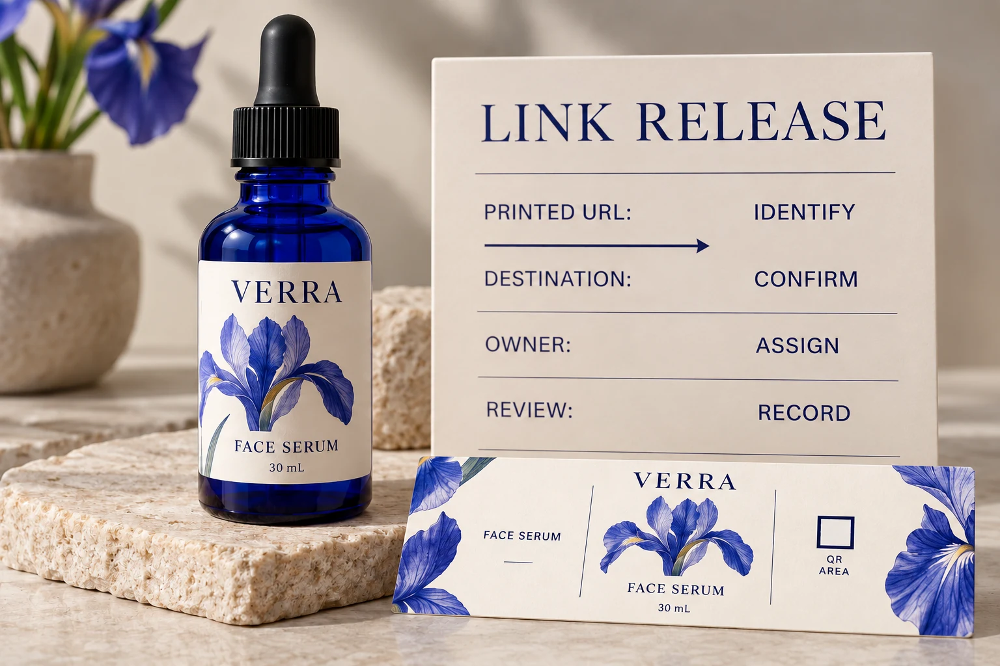

Start with what the code actually contains
Ask for the exact data encoded in the artwork. For a web link, compare the complete address with the approved reference rather than relying on a short filename such as final-QR.png. Have the responsible person decode the supplied code and record what it contains.
Then distinguish that address from the final page the browser displays. A code can contain a direct product-page URL, or it can contain an address that redirects elsewhere. Those arrangements create different maintenance tasks. The physical pattern on the bottle does not rewrite itself when the product page moves.
Our finished-bottle barcode checklist covers product mapping, placement and print verification. This guide addresses the separate question of who keeps the linked information reachable and correct.
Choose the link arrangement with the website owner
GS1's redirection guidance distinguishes a product's identifying URI from the location of information about it. For GS1 Digital Link, it describes redirection and the coordination needed between those responsible for identifiers and those responsible for online content.
That is a useful division of responsibility. It does not turn every ordinary website QR into a GS1 barcode. If your project requires GS1 identification or trading-partner acceptance, involve the responsible barcode team and use the applicable specification.
For a simple promotional link, ask the website owner whether the encoded address will remain usable through planned website changes. A brand-controlled address may provide useful continuity, but only if someone maintains the domain, hosting and redirect. A third-party service needs its own continuity and access arrangements. Neither choice maintains itself.
Do not buy a resolver just because the brief says QR
GS1's resolver support answer states that using a QR Code powered by GS1 does not require a resolver, while recommending a route to related information. The required arrangement should follow the project's actual identification and information needs.
Ask the web or barcode specialist to explain the proposed service in plain terms. Which address is printed? Who can change the target? What happens if a supplier relationship ends? Which ongoing service or account is needed? Record the answers before treating a generated image as a complete deliverable.
This is a purchasing scope check. It does not require the label buyer to design a redirect infrastructure or purchase a subscription without a defined need.
Map the destination to the exact product version
A link that opens successfully can still be wrong. Check the product, variant, language and intended information on the resulting page. A range homepage may be acceptable for a general brand story and inadequate for a brief promising instructions for one specific serum.
Give each artwork version an explicit destination record. Where several products share a destination, approve that choice deliberately. Where the destination changes by region or another rule, have the responsible specialist explain the expected behavior and how the team will review it.
Do not assume a QR link permits required information to disappear from the physical pack. Have the brand's responsible reviewers approve the information arrangement separately. The link worksheet establishes what the project intends to deliver; it does not establish regulatory acceptance.

Keep a release record that survives the agency handoff
Use one record shared by the artwork approver and the person responsible for the website:
| Field | Record | Question before release |
|---|---|---|
| Printed data | Exact encoded address and code artwork revision | Does decoding return this address? |
| Intended result | Product, variant, language and target information | Is this the content the pack promises? |
| Link arrangement | Direct target or identified redirect/service | Which part can change after printing? |
| Control | Named accountable owner and change authority | Who can resolve an incorrect destination? |
| Continuity | Relevant service dependency and agreed maintenance responsibility | What happens during migration or supplier change? |
| Review | Date, reviewer, result and unresolved issue | Is the production release supported? |
Leave a question open when nobody can answer it. A temporary page that happens to work today is not evidence of an agreed maintenance plan. Resolve the missing ownership with the website team before authorizing the permanent printed address.
Review the digital journey and printed sample separately
First check the supplied data and online journey. Then assess the actual printed and applied code using the project's agreed scanning and verification requirements. A working desktop link does not demonstrate printed readability; a successful scan does not establish that the destination contains the approved information.
Keep both results connected to the same artwork and product reference. If the code artwork changes, revisit the relevant print checks. If only the destination content changes, have its owner review the content and routing rather than automatically ordering new labels.
For a short presentation run, a stable approved product page with a clear owner may be enough for the immediate purpose. For packaging expected to remain in circulation through a website migration, the team has a stronger reason to document routing and continuity before printing. The useful difference is the service the pack must deliver over time.
Bring the unresolved link decision into the label brief
For custom cosmetic bottle labels, provide the container, label size, artwork, quantity by design and approved code data. Identify the website owner and whether destination approval or printed-code evaluation is still pending.
Use the inquiry form to prepare your message, then send artwork and supporting references by email or WhatsApp. The form does not upload attachments. Keep link maintenance in the brand's release record so the next website change does not become an unexplained packaging problem.